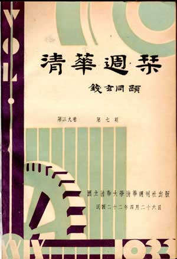

关键词查询
清华周刊全文浏览
在此可以按年代顺序浏览全文
清华周刊分类浏览
在此可以按常见的几种分类浏览全文
清华周刊及其价值
编制说明
《清华周刊》创刊于1914年3月，至1937年5月共出版676期。抗战爆发，清华南迁，《周刊》被迫停刊。1947年2月复刊后，只出了17期便再次停刊。
《清华周刊》是学生刊物，上至总编，下至发行，大都由学生担任。虽然如此，它仍是当时影响力很大的综合性刊物；一份学生刊物具有如此规模，能延续如此长的历史，在中国教育史上是鲜见的。闻一多、顾毓秀、梁实秋、周培源、梅汝璈、贺麟、蒋南翔等都曾担任过《周刊》的主编、经理等重要职务，并在《周刊》上发表了不少文章。
为了让更多的人了解和认识这一珍贵的历史文化宝藏，使它在新的历史时期发挥新的作用，特将其数字化供读者使用。